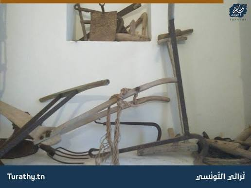

قرطاج: موسوعة ماغون الفلاحية
مقدمة
تُعدّ موسوعة ماغون، أو «كتاب الفلاحة» لماغون العالم الفلاحي القرطاجي، أحد أهمّ المراجع الأساسيّة لعلم الزراعة في الفترة القديمة. ولم تكن هذه الموسوعة مجرد دليل فلاحي محلي، بل تحوّلت إلى مرجع علمي وعملي تجاوز حدود قرطاج المجالية والزمنية، وامتدّ صداها إلى العالم الروماني والإغريقي، وأسهمت في إشعاع قرطاج البونيّة في المتوسّط حتى بعد سقوطها سنة 146 ق.م.
ما هي مضامين موسوعة ماغون وخصائصها العلمية؟ وما هو دورها في إشعاع قرطاج البونية وتطوّر النشاط الفلاحي والاقتصادي في المتوسط؟
I مضامين الموسوعة وخصائصها العلمية
1. التعريف بالموسوعة وطابعها العلمي والعملي
موسوعة ماغون هي كتاب في الفلاحة وضعه ماغون العالم الفلاحي القرطاجي، وتُعدّ من أهمّ المراجع الأساسيّة لعلم الزراعة في الفترة القديمة. وقد جمعت هذه الموسوعة بين الطابع العلمي والطابع العملي، إذ لم تكتفِ بالتنظير بل قدّمت حلولاً وتطبيقات ميدانية مباشرة للفلاحين. وقد أسهمت بمحتواها وطابعها العلمي والعملي في إشعاع قرطاج البونيّة في المتوسّط حتى بعد سقوط قرطاج سنة 146 ق.م.
2. مضامين الموسوعة وميادينها
مثّلت موسوعة ماغون مصدراً ثميناً للمعلومات اعتباراً للإضافات التي احتواها في عديد الميادين، ومنها:
- تقتنيات الإنتاج الفلاحي: أي الأساليب والتقنيات المتعلقة بكيفية تحسين الإنتاج الزراعي والرفع من مردوديته.
- درجة التكثيف الزراعي: وقد اهتمّت الموسوعة بمسألة كثافة الاستغلال الزراعي للأرض وكيفية تحقيق أفضل استغلال للمساحات المزروعة.
- الروزنامة الفلاحية: حيث ضبطت الموسوعة مواسم الزرع والحصاد والأشغال الفلاحية المختلفة وفق تقويم دقيق.
- خصائص المجال الزراعي القرطاجي: إذ وصفت الموسوعة الخصائص الطبيعية والبشرية للمجال الزراعي القرطاجي وأساليب استغلاله.
- نصائح حول استعمال اليد العاملة: قدّمت الموسوعة إرشادات عملية حول تنظيم العمل الفلاحي وتوزيع المهام على اليد العاملة.
- ارتباط القرطاجيين بالأرض: فقد عكست الموسوعة مدى تعلّق القرطاجيين بأرضهم واهتمامهم بها كأساس للثروة والقوة.
وبذلك كان كتاب الفلاحة بحقّ موسوعة أسهمت في تطوّر النشاط الفلاحي بقرطاج البونيّة، كما ساعدت على ازدهار النشاط الحرفي وخاصة التجاري.
II إشعاع الموسوعة وأثرها
1. صدى الموسوعة خارج حدود قرطاج
تجاوز صدى الموسوعة الحدود المجاليّة والزمنيّة لقرطاج البونيّة، فقد اعتبرها الرومان أهمّ غنائم الحرب البونيّة الثالثة، فعملوا على تبنّي محتواها وقاموا بترجمتها. كما نجد مقتطفات منها مترجمة إلى الإغريقيّة واللاتينيّة في عديد الكتب التي اهتمّت بالفلاحة في الفترة القديمة والوسيطة.
2. دور الموسوعة في إشعاع قرطاج البونية
أسهمت موسوعة ماغون بمحتواها وطابعها العلمي والعملي في إشعاع قرطاج البونيّة في المتوسّط حتى بعد سقوط قرطاج سنة 146 ق.م. وقد مكّن كل ذلك من دعم الحضور القرطاجي في المتوسّط، ليس عسكرياً فقط، بل حضارياً وعلمياً واقتصادياً أيضاً. ويُعد هذا الإشعاع العلمي دليلاً على أن قرطاج لم تكن مجرّد قوة تجارية وعسكرية، بل كانت أيضاً مركزاً للإنتاج الفكري والعلمي في العالم القديم.
3. أثر الموسوعة على النشاط الفلاحي والحرفي والتجاري
كان لكتاب الفلاحة أثر عميق في الاقتصاد القرطاجي، إذ أسهم في تطوّر النشاط الفلاحي بقرطاج البونيّة من خلال تحسين تقنيات الإنتاج ورفع مردوديته. كما ساعدت هذه الموسوعة على ازدهار النشاط الحرفي، إذ ارتبط تطوّر الفلاحة بتطوّر الصناعات الحرفية المرتبطة بها كصناعة الأدوات الفلاحية والزجاج والفخار. وقد مكّن كل ذلك من دعم الحضور القرطاجي في المتوسّط وتعزيز مكانته الاقتصادية والتجارية.
خاتمة
تُعدّ موسوعة ماغون نموذجاً بارزاً على الإشعاع الحضاري والعلمي لقرطاج البونيّة، إذ تجاوز صداها الحدود المجالية والزمنية، وتحوّلت إلى مرجع أساسي في علم الزراعة عند الرومان والإغريق. وقد أسهمت بمحتواها العلمي والعملي في تطوّر النشاط الفلاحي والحرفي والتجاري، مما دعم حضور قرطاج في المتوسّط حتى بعد سقوطها سنة 146 ق.م.
📖 تعريفات
👤 شخصيات
- ماغون: عالم فلاحي قرطاجي، صاحب موسوعة الفلاحة المعروفة بـ«موسوعة ماغون» أو «كتاب الفلاحة»، وهي من أهم المراجع الأساسية لعلم الزراعة في الفترة القديمة، جمعت بين الطابع العلمي والعملي.
🌍 دول ومناطق
- قرطاج البونية: المركز الحضاري الذي أنتج موسوعة ماغون، وأسهمت هذه الموسوعة في إشعاعه بالمتوسط حتى بعد سقوط قرطاج سنة 146 ق.م.
- روما: القوة التي اعتبرت موسوعة ماغون أهمّ غنائم الحرب البونية الثالثة، فعملت على تبنّي محتواها وترجمتها.
- بلاد الإغريق: المنطقة التي وصلتها مقتطفات موسوعة ماغون مترجمة إلى الإغريقية، إلى جانب الترجمات اللاتينية.
- البحر المتوسط: المجال الجغرافي الذي امتدّ إليه إشعاع موسوعة ماغون، وعزّزت من خلاله قرطاج حضورها الحضاري والعلمي والاقتصادي.
⚔️ أحداث هامة
- الحرب البونية الثالثة: الحرب التي اعتبر الرومان خلالها موسوعة ماغون أهمّ غنائمها، فعملوا على تبنّي محتواها وترجمتها.
- سقوط قرطاج (146 ق.م): التاريخ الذي سقطت فيه قرطاج، لكن إشعاع موسوعة ماغون استمرّ بعده في العالم الروماني والإغريقي.
📌 أخرى
- موسوعة ماغون: كتاب الفلاحة لماغون العالم الفلاحي القرطاجي، ويُعدّ من أهمّ المراجع الأساسيّة لعلم الزراعة في الفترة القديمة، جمع بين الطابع العلمي والعملي، واحتوى إضافات في تقنيات الإنتاج الفلاحي ودرجة التكثيف الزراعي والروزنامة الفلاحية وخصائص المجال الزراعي القرطاجي ونصائح حول استعمال اليد العاملة وارتباط القرطاجيين بالأرض.
- الروزنامة الفلاحية: تقويم دقيق لمواسم الزرع والحصاد والأشغال الفلاحية المختلفة، ضبطته موسوعة ماغون لتنظيم النشاط الزراعي القرطاجي.
- التكثيف الزراعي: كثافة الاستغلال الزراعي للأرض وكيفية تحقيق أفضل استغلال للمساحات المزروعة، وقد اهتمّت به موسوعة ماغون.
- تقتنيات الإنتاج الفلاحي: الأساليب والتقنيات المتعلقة بكيفية تحسين الإنتاج الزراعي والرفع من مردوديته، وقد احتوتها موسوعة ماغون ضمن مضامينها.
- استعمال اليد العاملة: تنظيم العمل الفلاحي وتوزيع المهام على اليد العاملة، وقد قدّمت موسوعة ماغون نصائح عملية حول ذلك.
🗺️ خرائط ومعطيات مصورة


